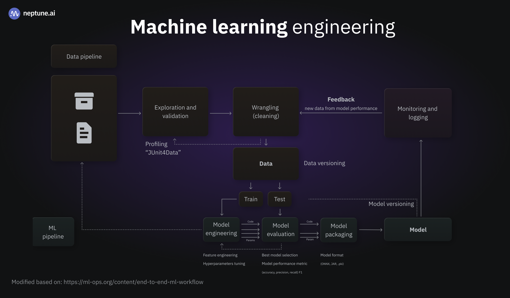

oshasight
A lightweight computer-vision service that spots missing PPE and unsafe actions in real time — before OSHA does.
View Live Demo SlidesKey Features
- < 50 ms latency, multi-camera support
- Hard-hat, mask, goggles, vest, gloves, smoke detection
- Edge-ready — GTX 1660 Ti or Jetson Orin Nano
- Signed violation log for effortless OSHA audits
- REST + WebSocket API for easy plant-floor integration
About the Project
oshasight is an open-source capstone for the Sapienza course “Computer Vision and NLP.” We distilled YOLOv8, merged six detectors, and tuned a rule engine to convert raw frames into actionable safety alerts.
The model reaches 0.91 mAP@0.5 while pushing 100 FPS on commodity GPUs — or 31 FPS on Jetson Orin Nano at just 4.7 W.

Meet the Team
Lead Data Scientist
Computer Vision Engineer